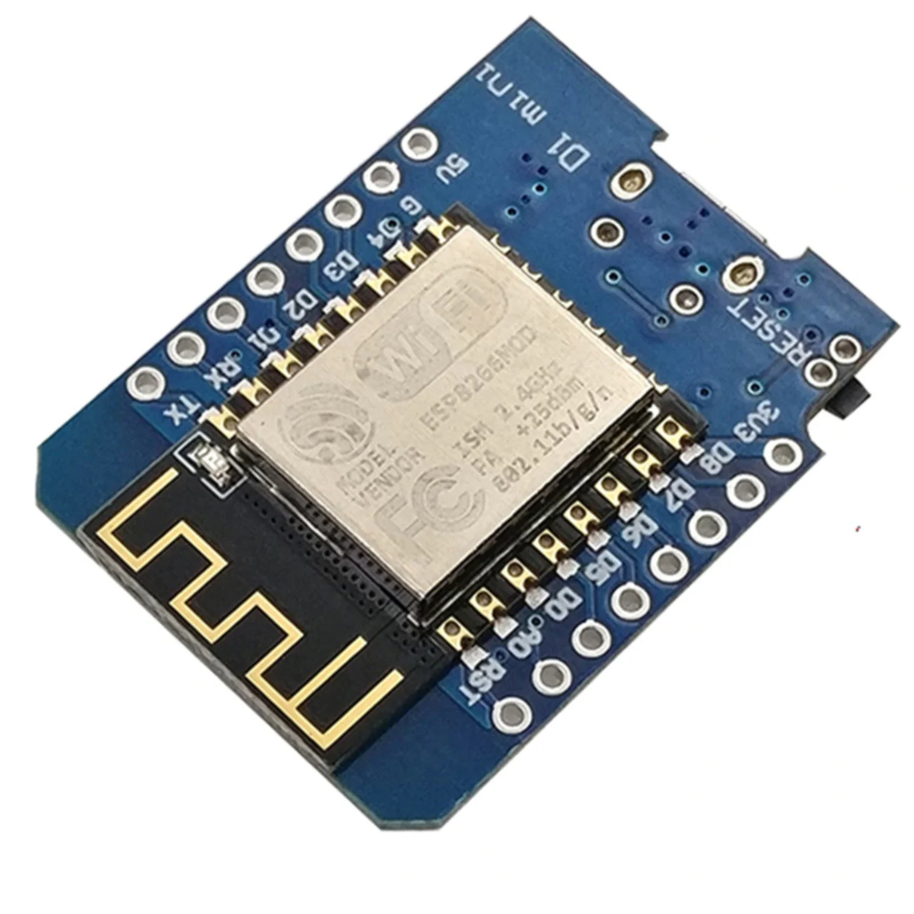
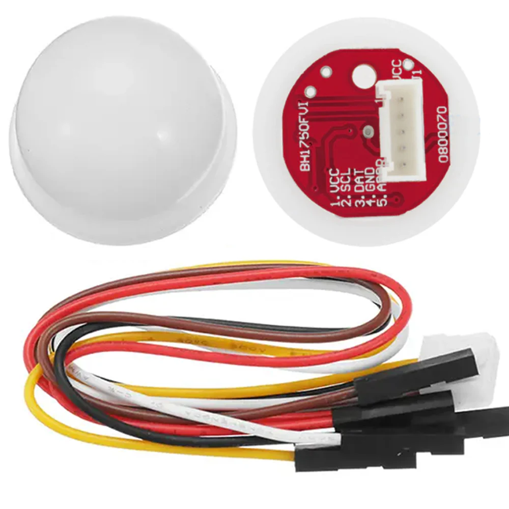
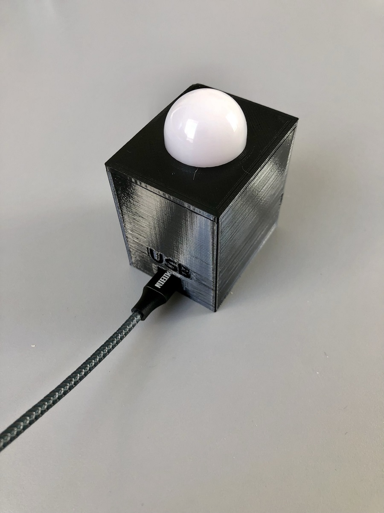

WEMOS D1 Mini
The ESP8266 board used for the luxmeter and Vindriktning projects. Check that the listing matches the board and pinout.
Luxmeter · VindriktningView supplier listingStart with the right board, add a sensor and give your project a home. These are the components used in the collection.

The ESP8266 board used for the luxmeter and Vindriktning projects. Check that the listing matches the board and pinout.
Luxmeter · VindriktningView supplier listing
A digital light sensor connected over I²C. The luxmeter configuration uses address 0x23 and a 30-second update interval.
LuxmeterView supplier listing
Give the luxmeter a tidy enclosure with the project's downloadable 3D-print files. Check fit against your actual components.
Printable enclosureDownload print filesConnect the BH1750 to your WEMOS D1 Mini using four wires. Power the sensor from 3.3 V and share ground.
More hardware notes| BH1750 | WEMOS D1 Mini |
|---|---|
| VCC | 3.3 V |
| GND | GND |
| SCL | D1 / GPIO5 |
| SDA | D2 / GPIO4 |
Find the matching project and get your board connected.